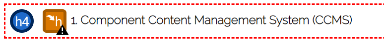

Oppgave 1 i deleksamen 4 gikk ut på å gjennomføre en analyse av egen nettside.
Det vil si at jeg skal gjøre en SEO-, UU- og Heuristisk evaluering.
Ettersom kontakt- og analyse sidene ikke er ferdig,
vil jeg kun gjøre en analyse av start-, CMS- og SEO sidene.
På denne siden vil jeg dokumentere mine resultater og
hvilke endringer jeg gjorde til slutt. For å analysere
nettsiden min har jeg tatt i bruk verktøyene WAVE (Web Accessibillity Evaluation Tool)
og Lighthouse, samtidig artikkelen «10 Usability Heuristics for User Interface Design» skrevet av Nielsen Norman Group.
Wave
Wave er et evalueringsverktøy som
analyserer nettsiden slik at man kan gjøre den mer tilgjengelig for brukere med ulike
typer vansker(WebAIM, u.å.). Dette verktøyet identifiserer feil rundt tilgjengelighet,
og feil basert på WCAG.
Når jeg evaluerte mine sider ved hjelp av Wave, passet
jeg på å justere skjermstørrelsen, slik at jeg fikk testet de ulike breakpointsene. På
sidene om Søkemotoroptimalisering (SEO) og Content Management System (CMS), dukket
det opp 3 alerts; "skipped heading level", "redundandant link" og "underlined text".
Den første alerten viste til overskriftene i tabellen på siden.
Overskriftene stod som "h4",
og tidligere på siden hadde jeg kun brukt til "h3". Dette problemet løste jeg derfor
ved å endre overskriftene til "h3". Den andre alerten viste til referanselisten nederst
på siden. "Redundandant link" forteller meg at jeg har en link som er gjentagende.
Noen av referansene i lista har samme link, da de kommer fra samme nettside.
Dersom jeg endrer på disse linkene vil referansene bli feil. Derfor valgte jeg å
la de stå slik de var. Den siste alerten viste til understrekene som overskriftene i tabellen fikk
når skjermen ble justert ned. Alerten fortalte at understreker viser brukeren at dette er en link.
Ettersom overskriftene ikke er linker, løste jeg problemet ved å fjerne dekorasjonen.
I tillegg til disse feilene, dukket også opp en alert som sa at jeg hadde tomme knapper.
Denne alerten viste til knappene i navigasjonsområde på toppen av siden. Ettersom navigasjonsområdet
er likt på alle sidene, var denne feilen gjentagende.
Alerten gjaldt knappene som hadde ikoner over seg, altså hamburgermenyen
og nedtrekkspilen bak "meny". Dette løste jeg ved å legge ikonene inn i "a"-tagger istedenfor "button"-taggen.
Lighthouse
Startsiden
Den første siden jeg evaluerte var startsiden. Ved evaluering av mobilversjonen fikk siden 100
i Best Practices, 95 i Accessibility og 75 i SEO. Ettersom jeg skåret lavest på SEO er det dette punktet
jeg skal fokusere på og forbedre. Den første feilmeldingen som dukket opp var at siden manglet en meta-tag
med en beskrivelse av sidens innhold. Fikset feilen ved å legge til en meta-tag i header med name="beskrivelse".
Den neste feilen gjaldt nedtrekksmenyen og knappene for sosiale medier nederst på siden. Problemet var at
linkene i disse knappene ikke var "crawlable". For sosiale medie knappene valgte jeg å ikke endre,
da disse knappene ikke skal funke. Valgte derfor å endre fra "a"-tag, tilbake til "button"-tag rundt ikonene.
Etter mye fram og tilbake, fant jeg ut at problemet var at knappene manglet en "title"-attributt
med en beskrivelse av knappene. Jeg valgte derfor å implementere dette på alle sidene i nettsiden.
Den siste feilen som dukket opp var at størrelsen på teksten var for liten. For å gjøre den
mobilvennlig, må teksten være over 12px, mens min ligger på 11.2px. Jeg endret derfor
størrelsen på "p"- og "a"-tagene på siden til 0.9rem, istedenfor 0.7rem på alle sidene.
Ved evaluering av desktopversjonen fikk siden 95 i Accessibility, 92 i Best Practices og 80 i SEO.
Feilene som dukket opp var de samme som gjaldt for mobilversjonen. Det var derfor ikke så mye å forbedre.
En av feilene som dukket opp i Best Practices gjaldt logoen. Når siden blir justert opp til desktop,
får logoen til siden lav oppløsning. Dette problemet løste jeg så godt det lot seg gjøre,
ved å sette en "max-width". Det beste ville vært å bytte logo til noe med bedre oppløsning,
men det har jeg ikke verktøy til.
Universell Utforming Vs. Søkemotoroptimalisering
Den neste siden jeg evaluerte var siden om universell
utforming og søkemotoroptimalisering. Ved evaluering av mobilversjonen fikk siden 100 i
Best Practices, 94 i Accessibility og 75 i SEO. Feilene og manglene som dukket opp var de
samme som dukket opp ved evaluering av starsidens mobilversjon. Feilene gjaldt mangel på
"meta"-tag, linker som ikke er "crawlable" og for liten skriftstørrelse. Disse feilene
rettet jeg derfor opp på lik måte som for startsiden.
Ved evaluering av desktopversjonen fikk siden 94 i Accessibility, 92 i
Best Practices og 80 i SEO. Dette er det samme resultatet startsiden fikk.
Feilene er også de samme, og er derfor allerede fikset på.
Content Management System
Den siste siden jeg evaluerte ved hjelp av Lighthouse var siden om
Content Management System. Ved evaluering av mobilversjonen fikk siden 100 i Best Practices,
95 i Accessibility og 75 i SEO. Ved evaluering av desktopversjonen fikk siden 95 i Accessibility,
92 i Best Practices og 80 i SEO. Feilene som dukket opp ved evalueringene er de
samme som gjaldt for startsiden, og siden om Universell utforming og Søkemotoroptimalisering.